Introduction to Linux
MIT Splash 2014
Anne LoVerso (Olin College of Engineering)

What is Linux?
- It's an operating system, like Windows or MacOS. It's called "Unix-like" because it's similar to the Unix operating system
- It's free and open source software (FOSS) - that is, free as in speech.
Okay, What's Unix?
- Published in 1971
- Operating system as well as a model for others
- Inspired the Unix philosophy, meaning the OS provides a set of simple tools that each perform a limited, well-defined function, with a unified filesystem, shell scripting and command language
- Written entirely in assembly language, then re-written in C. The C programming language was developed to be the systems programming language for Unix
History of Linux
1983 - Richard M. Stallman founds the GNU Project, creating a "complete Unix-compatible software system" composed entirely of free software.
1989 - Stallman writes the GNU General Public License
Early 1990s - Many of the programs required in an operating system (such as libraries, compilers, text editors, a Unix shell, and a windowing system) are completed, although low-level elements such as device drivers, daemons, and the kernel are stalled and incomplete.
1991 - Linus Torvalds gets frustrated with OS licensing and starts working on his own, which eventually becomes the Linux kernel
Okay, Why Use Linux?
- Free and open source philosophy
- Software updates
- Less vulnerable to viruses
- Download new software with a single command
- Command line makes everything easy
- Developer-friendly
- Free, unlimited support
- Better for the environment
Linux Distributions
Because Linux is free and open source, it can be rebuilt in many different forms. Different distros build off the base Linux kernel and apply unique layers on top of itUbuntu
One of the most popular. Built on Debian, meant to be stable, easy-to-use, friendly, and clean. Modern without being bleeding-edge. Uses Unity desktop for a solid graphical experience 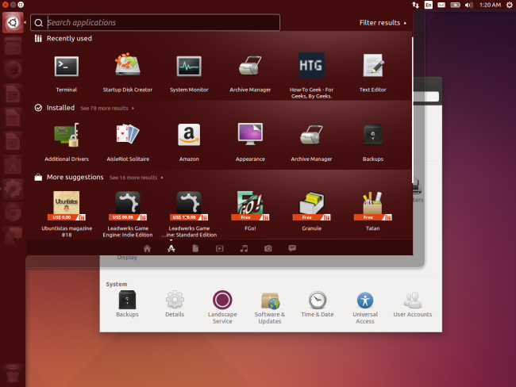Mint
Originally built off Ubuntu, now has its own flavor. Uses different desktop graphics from Ubuntu, and doesn't auto-install critical software updates. Some people like having this extra degree of control, some call it insecure. 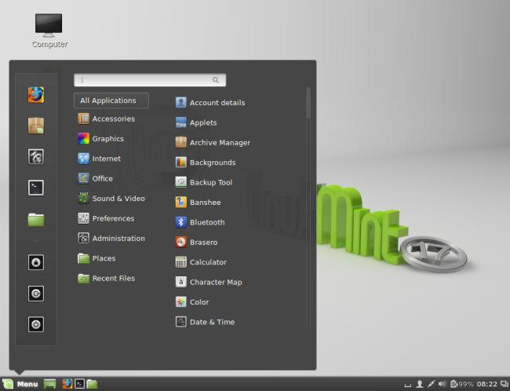Debian
Debian was founded over 20 years ago, and is highly stable, although somewhat more conservative than some bleeding edge distros. Ubuntu is based heavily off Debian. It's the largest non-commercial distro. 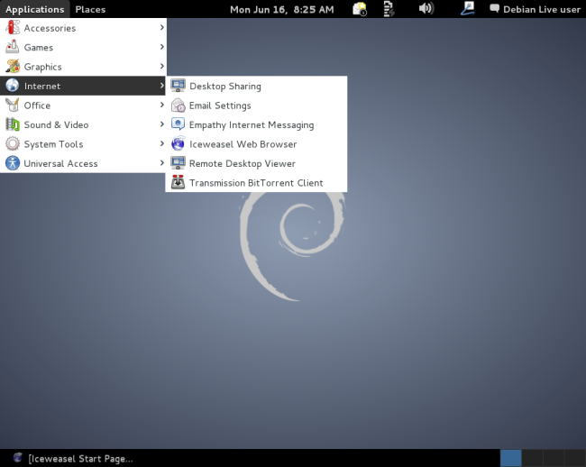Fedora
Sponsored by Red Hat, Fedora has a very strong focus on free software - it's very difficult to install proprietary software here. Integrates upstream software into its desktop environment. 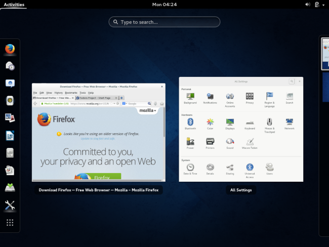CentOS and RHEL
RHEL stands for Red Hat Enterprise Linux. This is built for businesses, servers, and workstations who pay for RHEL support subscriptions and is protected under trademark law. CentOS is RHEL-based, but free. 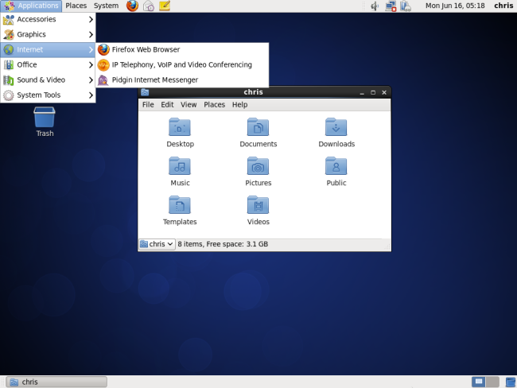openSUSE and SUSE Linux Enterprise
Community-created distro sponsored by Novell. Novell purchased SuSE Linux in 2003, and they still create an enterprise Linux project known as SUSE Linux Enterprise. 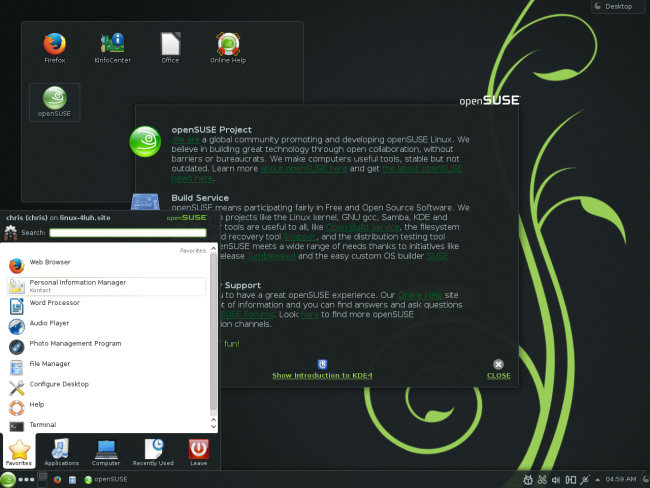ArchLinux
Much more old-school than other distributions, Arch subscribes to the "Keep It Simple" philosophy - requiring the user to configure the system properly. It's for users who want their OS to get out of their way. 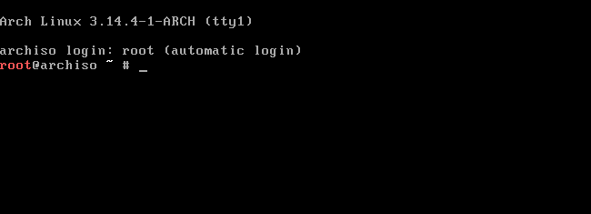Slackware
Slackware Linux is the oldest distro still maintained and putting out new releases. Very conservative, it dispenses all graphics and boots to command line by default. 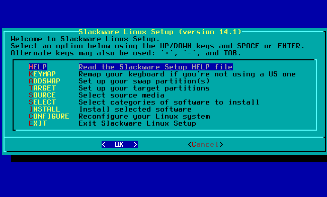How to Install Linux on a Virtual Machine
Using a virtual machine allows you to run a Linux distro virtually on top of Windows or Mac
The other (more involved) option for running Linux would be to create a dual boot partition
Download VMware Player
Go to https://my.vmware.com/web/vmware/downloads, scroll down to “VMware Player” under the Desktop & End-User Computing section. Download and install the exe file for the most recent version (likely VMware-player-6.0.4-2237854.exe)Get Linux
Download the .iso file for your chosen Linux distribution. Ubuntu (a good place to start) is available at http://www.ubuntu.com/download/desktopSet it up in VMware
Open VMware player. On the menu on the right-hand side, select “Create a New Virtual Machine”
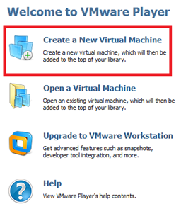At the next screen, select the radio button for “Installer disc image file” and tell it where to find the .iso file that you downloaded and saved
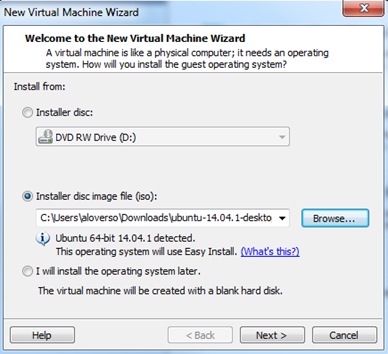Click next, review the info, and click finish. It will auto-power on your machine, and you can access your desktop. The machine will also appear on the left-hand side of VMware in the future. To start it at any point, just double click.
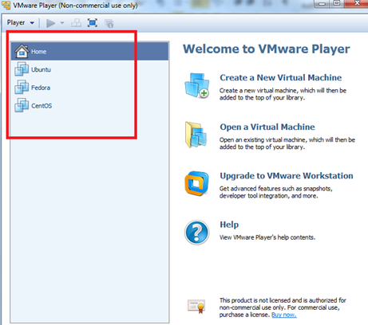Okay, now how do I use Linux?
The learning curve in any Linux user, especially if you, like most, are coming from a non-Unix-like OS like Windows, is command line interpretation.A few commands
- cd - change directory; cd Documents
- ls - list
- pwd - print working directory
- mkdir - make directory; mkdir my_new_directory
- rm - remove; rm my_file.txt
- rmdir - remove directory; rmdir my_new_directory
- cp - copy a file; cp my_file.txt /home/Documents/other_directory
- mv - move (or rename); mv my_other_file.txt /home/Documents/other_directory
Working with Files
- touch - create file; touch newfile.txt
- cat - view contents of a file; cat myfile.txt
- wc - word count; wc example.txt
- grep - search tool; grep "linux is great" splash.txt
- sed - search and replace; sed s/MIT/Olin coolstuff.txt
Getting new stuff
Linux distributions come with a package manager, like yum (on Fedora, RHEL, CentOS, with RPM) or apt (Ubuntu, Debian)The Superuser
Some files or actions can only be accessed by root, which is a user with special privileges, similar to Administrator in WindowsCongrats! Now you understand this
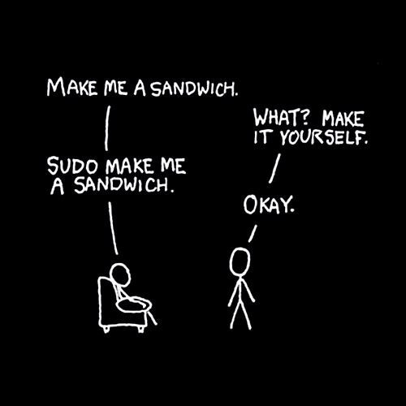Quiz!
Macintosh is a variant of...
- Linux
- Windows
- Unix
- Apple
- Steve Jobs
____is the world’s largest non-commercial Linux distribution
- Debian
- Ubuntu
- Fedora
- Mint
- Slackware
At the Linux prompt, I can always find out what directory I am in by typing ___
The way to execute a command as root user is ____
What's the command for "search"?
What do programs like "yum" or "apt-get" do?
Who wrote the original Linux kernel?
- Richard M. Stallman
- John Ubuntu
- Linus Torvalds
- Tux the Penguin